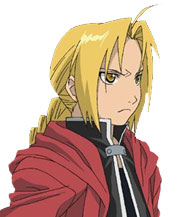
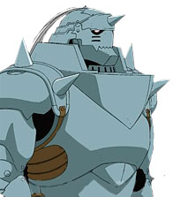
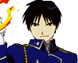
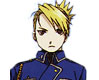

|  | Edward Elric, the older of the two brothers, is charactaristically short. But following the principles of equvalent trade, what he loses in height, he gains in his abilities as an alchemist. Edward becomes the youngest state alchemist in history, a prodigal genius. As all state alchemists have, he is given a codename, Full Metal Alchemist, rooting from his auto-mail (artificial metal) body, his arm and leg. In order to recover his original body, along with his brother, he travels to find the philosopher's stone. |
|  | Alphonse Elric is the younger brother to Edward. He too has a profound knack at alchemy, but is not a state alchemist, which allows him to do certain things that Edward cannot do. Of the two brothers, Alphonse would be the kinder and more understanding of them. Through their trials and tribulations, he keeps his reckless brother out of too much trouble. |
| The auto-mail specialist and childhood friend of the Elric brothers, Winry lives with Aunt Pinako. She is the creator of Edward's auto-mail and its mechanic. Orphaned by the death of her parents during a civil war, Winry stays with Pinako learning the tricks of the trade in terms of auto-mail. She lives with her grandmother and pet dog in Resembool. |
|  | Roy Mustang is a state alchemist, specializing in flame alchemy. He has achieved his rank from his prior achievements during the eastern Ishbal war. His alchemy resides with the use of his fiber-synthetic gloves, that have a transmutation circle sewn into them. At first glance, Roy is nothing more than a cocky man who would jump at the chance to see women in skirts, but in reality he is a determined person, who is not so easily defeatable. |
| Pinako Rockbell is a master of auto-mail design and construction who also happens to be the grandmother of Winry Rockbell. She is short and always has her hair in a ponytail. Her trademark is the pipe which she grips in her mouth. She watched over Edward and Alphonse like they were her grandchildren after the disappearance of their father and death of their mother. In order to recover his original body, along with his brother, he travels to find the philosopher's stone. |
|  | Riza Hawkeye is Roy Mustang's subordinate, acting as his advisor and his aid. Hawkeye is very skilled in the use of firearms. She is always calm and cool, and not easily perturbed by many things. However, she is secretly feared by her peers. She is the only one of Mustang's subordinates that can talk back to him without any consequences. Perhaps it is because she has kept him in line on his steady rise through the ranks of the military. |